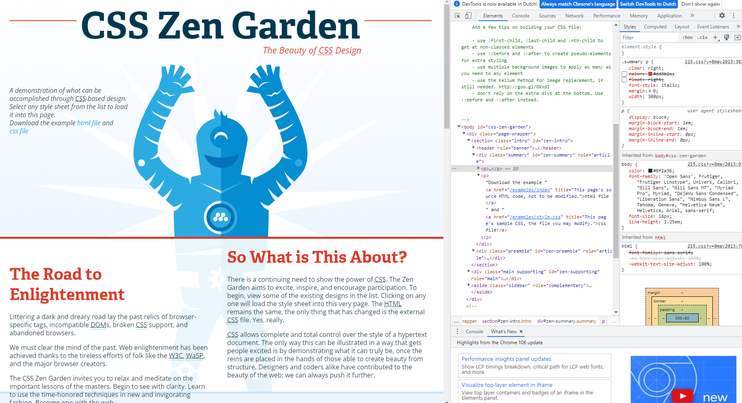
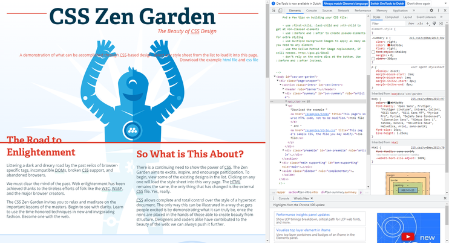

Opdracht 5
Alles aangevinkt

- Dit is dus hoe de website er normaal uit ziet, alles is nog aangevinkt.
- Dit is dus hoe de website er normaal uit ziet, alles is nog aangevinkt.

- Zo ziet de website er uit als de color en de float niet zijn aangevinkt,
de tekst staat aan de linkerkant en de tekst heeft geen kleur.

- Zo ziet de website er uit als de font style en de width niet zijn aangevinkt,
de tekst heeft geen lettertpe en het is 1 doorlopende tekst zonder breaks.